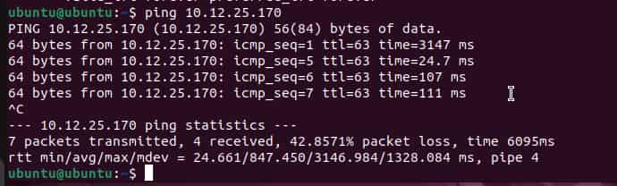
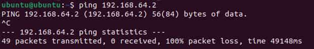

Why Can't These Two Computers Talk to Each Other?
Planning and Design
This activity involves two virtual machines connected via an Ethernet cable which cannot communicate with each other. The ultimate goal of this activity is to determine the cause(s) of this failure, focusing on OSI Layers 1-3.
Layer 1 will likely work in this activity because the Ethernet cable allows for data to be transmitted into and out of both VMs.
Layer 2 will most likely not work since the virtual machines were set up using the same model VM. Thus, the MAC address of each individual VM should not be able to be resolved due to them having the same virtual NIC.
Layer 3 will also likely not work since one of the virtual machines is one shared mode, which will create a virtual subnet in which it resides. Thus, attempting to send data via reference to an internal IP address should not work because internal IP addresses are assigned by the respective router.
Technical Development
Physical Layer Check (Layer 1)
To start, an Ethernet cable was plugged into both Mac desktop devices.
ip a was run on both devices. Here is the respective output:


As seen above, both VMs had state UP listed, so Layer 1 is active and functional.
Data Link Layer Check (Layer 2)
This is the output when trying to ping Computer 1:

When trying to ping this VM, this virtual machine experienced successful transmission.

This VM completely failed to transmit packets.
Since the VMs had the same virtual NIC, communication failure is expected. However, it can be concluded that one VM was in a subnet which was part of the network of the other VM. Thus, communication via IP address should happen half of the time, which correlates with what was obtained.
Network Layer Check (Layer 3)
When running ip a again, the same outputs were produced:
The IP addresses of the VMs are not identical.
Even if the IPs match, the VMs might not be on the same network. This is because they could have different virtual switches, which assign internal IP addresses using the same naming conventions.
In general, Layer 3 addressing cannot work under this configuration because the VMs are not part of the same subnet. Since they are both on their own virtual subnets, then using the internal IP address of the other VM will not work, as the virtual router/switch must first be accessed before referencing the internal IP or MAC address.
Testing Ping Again (Confirming Failure)
Next, ping was tested again, confirming failed communication on one VM and successful communication on the other:


Note: The explanation for this part is in Testing and Evaluation.
Testing and Evaluation
The issue is confirmed to be a failure in OSI layers 2 and 3. The physical connection was found to have state UP, so both VMs were open for network interaction, confirming that Layer 1 worked correctly. Meanwhile, the MAC addresses were shown to be the same, which means that the VMs used duplicated NICs, causing communication failure. Therefore, there is also a problem in the Data Link layer (Layer 2) since data will route to the incorrect place when attempting to be transmitted.Furthermore, the devices are also on different virtual subnets, preventing communication via internal IP addresses. This communication is not expected to work because the internal IP address of a device is only defined with reference to other devices in the same network (in this case a virtual subnet). Thus, Layer 3 was also expected to fail, which is supported by the ping command failing.
Ultimately, the ping command fails because the two virtual machines are in different networks, and to access the other virtual machine, its external IP address would have to be used (rather than the internal IP address assigned by the respective virtual router). To fix this, both VMs would have to be in Bridged mode, thus allowing them to connect to the same network and access each other via internal IPs. If they were to be in Shared mode, then the VMs would have to exist under the same host operating system. Pinging the external IP address provided by the respective virtual router is expected to work as well.
Reflection
The two computers couldn't communicate even though they were connected with a working Ethernet cable because they were not on the same network. This prevents the other VM from being accessed using the internal IP address obtained from ip a. Furthermore, Layer 2 also caused issues with data transmission because both VMs had the same MAC address (on account of being copies of the same VM), causing them to have the same virtual NIC. Layer 2 (Data Link) contributed to the failure because this layer deals with MAC addresses, so the destination could not be found. Layer 3 (Network) also contributed to the failure because the IP address of one device could not be found on the same network, preventing data from being routed correctly. UTM prevents two VMs from communicating directly in host-only/shared mode because this mode creates a virtual network for the respective VMs, thus disassociating them from the same network and preventing communication via internal IP address. Changing to bridged mode would ultimately allow communication between the two computers because they would then be on the same network, and devices on the same network can access each other by internal IP addresses. In a real SOHO network, routers and switches prevent similar issues by assigning different naming conventions to respective devices in the network, preventing confusion on which network a device is connected to. Switches in general are also designed to connect devices on the same network, so using them can allow connection via internal IP addresses, further preventing these issues.